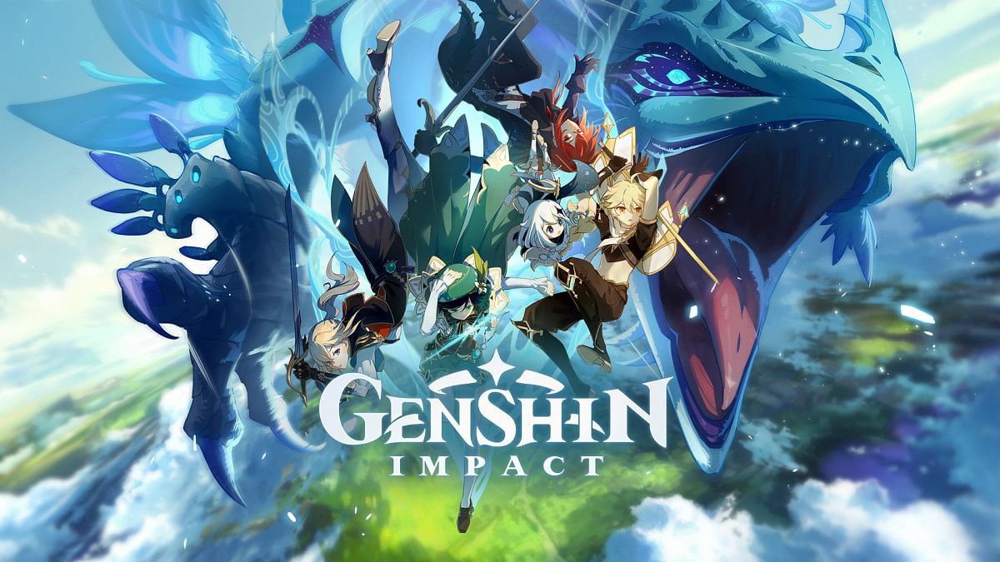

Apa itu Genshin Impact?
Genshin Impact hadir dengan sistem bermain Action Role Playing Game dipadu konsep Open World. Penyatuan dua elemen tersebut memang mampu menghadirkan adiksi tersendiri bagi pemain. Mengikuti perkembangan karakter di dunia yang terbuka menjadi semacam tantangan tersendiri.
Lewat sistem permainan Action RPG dalam Genshin Impact, aksi hack and slash menjadi hal yang lazim dan mudah dilakukan. Cukup butuh timing dan posisi yang tepat untuk mengalahkan musuh. Menariknya, tidak melulu soal bertarung, sebab miHoYo juga menjejalkan skill memasak bagi karakter agar dapat bertahan hidup. Dengan mencari bahan baku di lingkungan sekitar. Ada buah, sayur-mayur, bahkan ikan pun dapat ditangkap.
“Menciptakan permainan Open World yang indah dan luas untuk dijelajahi pemain dengan bebas baik secara sendiri atau bersama teman-teman lintas platform adalah apa yang telah dikerjakan oleh tim kami selama tiga setengah tahun terakhir”, kata Forrest Liu, Presiden dari miHoYo.
Ragam Karakter dan Elemen
Genshin Impact mengambil latar di dunia Teyvat. Sebuah tempat indah memukau yang memanjakan mata, berisi ekosistem kehidupan mirip seperti bumi, tentu saja. Pada awal permainan, gamer akan memulai dengan sosok traveler yang hilang ingatan. Dirinya hendak mencari saudara kembarnya yang hilang.
Perjalanan panjang dalam game dilakukan di dunia Teyvat yang luas. Ada tempat-tempat semacam kerajaan bernama Monstadt untuk dijelajahi. Juga ada pelabuhan pelabuhan Liyue. Dua wilaya tersebut jadi bagian dari tujuh negara kota besar di dunia Teyvat. Untuk berpindah cepat, traveler dapat memanfaatkan checkpoint tertentu.

Dalam perjalanan di dunia Teyvat, nantinya traveler (yang namanya bisa dikostumisasi) ini akan berjumpa dengan banyak tokoh, maupun playable character lain. Paling tidak ada 24 karakter traveler yang dapat dimainkan di Genshin Impact. Masing-masing karakter memiliki kekuatan dari elemen berbeda. Elemen memang menjadi kunci dalam perkembangan skill karakter traveler. Yakni elemen es (cyro), alam (dendro), api (pyro), air (hydro), angin (anemo), litrik (electro), dan tanah (geo).
Bisa ditebak akan muncul pertarungan dinamis saat karakter yang dimainkan memiliki kontradiksi dengan musuh. Elemen api tentu akan kesulitan berhadapan dengan elemen air. Elemen air dengan elemen tanah, dan sebagainya. Namun disitulah letak serunya. Apalagi pada awal permainan, karakter kita tidak langsung menguasai elemen tertentu.